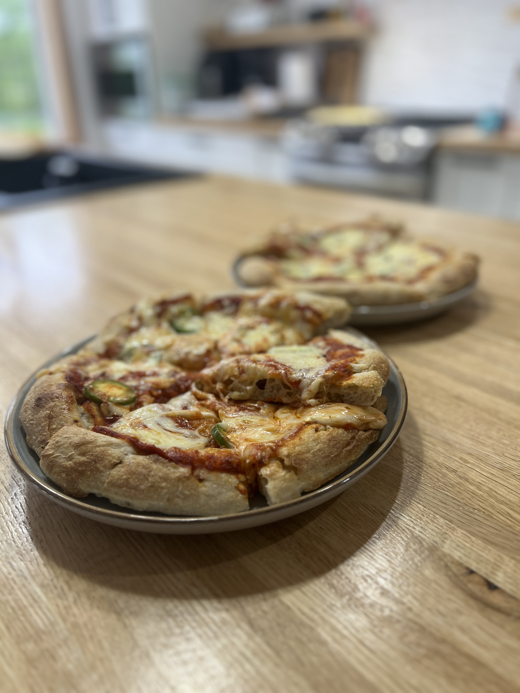

Sourdough Pizza
Using A's Sourdough Bakery Pizza Crust

What You Need
- 1 A's Sourdough Pizza Crust (850g)
- Pizza sauce (store-bought or homemade — recipe below)
- Mozzarella cheese, shredded (as much as you like)
- Toppings of your choice
Directions
- Preheat your oven to 380–400°F.
- Place the pizza crust on a baking sheet or pizza stone.
- Spread a generous layer of pizza sauce over the crust.
- Add shredded mozzarella (and any other cheese you love).
- Add your favorite toppings.
- Bake for 8–10 minutes, until the cheese is melted and bubbly.
- Slice and enjoy!
A's favorite: Just cheese — a generous layer of mozzarella — with a few slices of jalapeño, then top with a big mound of fresh arugula right out of the oven. Nothing else needed!
Homemade Pizza Sauce
Makes enough for 2–3 pizzas
- 1 can (398ml) crushed tomatoes
- 2 cloves garlic, minced
- 1 tbsp olive oil
- 1 tsp dried oregano
- 1 tsp dried basil
- ½ tsp salt
- Pinch of sugar
- Heat olive oil over medium heat.
- Add garlic, cook 30 seconds.
- Add tomatoes, oregano, basil, salt, sugar.
- Simmer 15–20 min, stir occasionally.
- Cool before spreading.